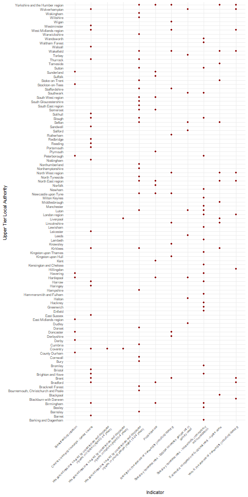

Interactively selecting indicators
Source:vignettes/selectIndicatorsRedRed.Rmd
selectIndicatorsRedRed.Rmd
knitr::opts_chunk$set(fig.path = "charts-")This short example introduces two new features included in the 0.1.1 version of the package:
- interactively selecting indicators
- highlighting the areas for each indicator that are deteriorating and are already statistically significantly worse than the England (or parent) value
The following libraries are needed for this vignette:
To begin with, we want to select the indicators that we want to analyse in this example. The select_indicators() function helps us do this:
inds <- select_indicators()After running the above code a browser window opens and will spend some time loading while it accesses the available indicators. Once loaded, the search bar in the top right corner allows the user to type in any searches to help locate the indicators of interest. This example will use the following indicators, selected at random, which belong to the Public Health Outcomes Framework profile. Note, the indicator IDs of the selected indicators are displayed on the left-hand side. The user can click an indicator for a second time to deselect the indicator if it has been selected unnecessarily.
## [1] 90630 10101 10301 92313 10401 11401 10501 92314 11502 10601 20101 20201 20601 20301 20602 90284 90832
## [18] 90285 22001 22002 90244The second function to be highlighted in this vignette is fingertips_redred(). This will return a data frame of the data for all of the areas that are performing significantly worse than the chosen benchmark and are deteriorating.
df <- fingertips_redred(inds, AreaTypeID = 202, Comparator = "England")The geom_tile() function from ggplot2 can be used to visualise the poorly performing areas:
df$IndicatorName <- sapply(strwrap(df$IndicatorName, 60,
simplify = FALSE),
paste, collapse= "\n")
p <- ggplot(df, aes(IndicatorName, AreaName)) +
geom_point(colour = "darkred") +
theme_minimal() +
theme(axis.text.x = element_text(angle = 45,
hjust = 1,
size = rel(0.85)),
axis.text.y = element_text(size = rel(0.9))) +
labs(y = "Upper Tier Local Authority",
x = "Indicator")
print(p)
plot of chunk redred